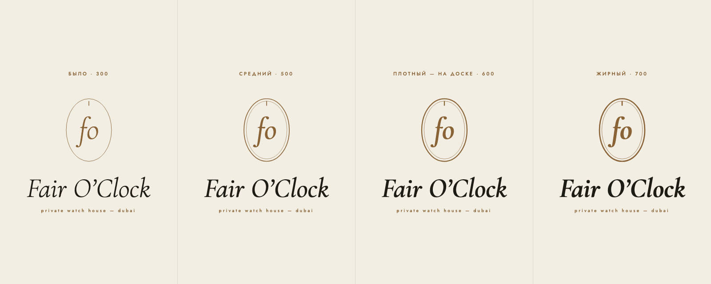
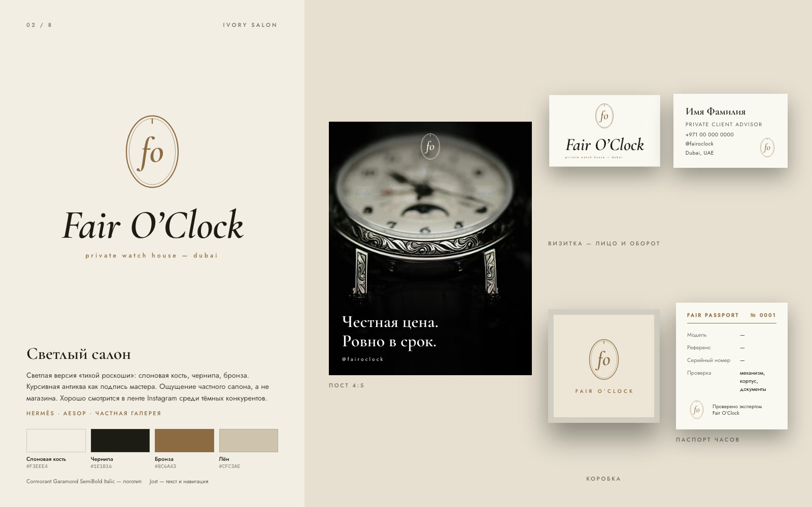

Светлый салон — логотип плотнее
Тот же стиль: слоновая кость, чернила, бронза, курсивная надпись и овал с «fo». Буквы стали толще, у овала двойная линия. Ниже — четыре толщины рядом, на доске стоит третья.
Толщина надписи

Доска с плотным логотипом
